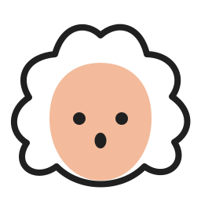

같은 세 음, 서로 다른 시작.
띠로리 음형의 마지막 음이 재생 버튼, 펜촉, 악보 페이지가 됩니다. 64·64·점32의 연결 구조를 공통으로 남겼습니다.
A · 마지막 음이 하는 일을 추천합니다. 음형의 구성 요소가 기능을 함께 표현합니다. 블루는 이번 비교의 첫 색이며 최종 대표색은 미정입니다.
설계와 제작 규칙 · 레퍼런스 · 검증과 한계A/B가 최신 후보입니다. 직전·운영 자산은 비교 이력입니다. Android 모드의 A/B는 108dp 레이어를 72dp 뷰포트로 표시하며, 점선은 66dp 안전 영역입니다. 이전 두 행은 원형 마스크 근사입니다. 실제 OS 효과·기기 캡처는 아닙니다.
음표 머리와 기능을 하나로
A는 음표 머리를 기능 형태로 바꾼 브랜드 심벌입니다. 네 빔과 점의 음가 연결 관계를 유지하지만, 표준 기보용 음표로 사용하지 않습니다. 원래 타원형 머리까지 유지하는 B도 아래 비교에서 확인할 수 있습니다.
음가를 덜어내지 않은 축소
16·24px에서는 기둥과 점을 키우고 빔 사이 여백을 확보했습니다. 점이나 빔을 생략하지 않았습니다. 다만 16px는 음형의 인상을 보는 스트레스 테스트이며 기능·음가 판독을 보장하지 않습니다.
24·32px 목록에서는 앱 이름을 함께 표시합니다. 기능 식별은 32px 이상, 음가 세부 비교는 48px 이상을 제작 권고로 두되 실제 사용자·기기 확인이 필요합니다.
하나의 색, 또는 같은 계열의 세 색
앱별 색을 구분한 경우
Play 블루 · Studio 바이올렛 · Score 틸. 색을 빼도 기능 형태가 남는지를 먼저 봅니다. 제품의 UI 기본색과 기존 여섯 팔레트는 변경하지 않았습니다.

모브랜드의 원래 음형은 유지합니다. 앱 심벌은 그 음형의 기능별 변형이고, 바흐는 별도의 반응 캐릭터로 사용합니다.
Dock에서의 인상
실제 제작한 ICNS 프레임과 이름 없는 유틸리티 도형을 함께 배치한 모의 Dock입니다.
이름을 가리고 확인해 보기
세 형태를 잠깐 본 뒤, 듣기·편집·악보 보기에 해당하는 아이콘을 골라 보세요. 이 화면은 비교 도구이며 사용자 테스트 결과를 만들지 않습니다.
카카오 계열 공식 스토어 아이콘 비교
공통 바탕과 서비스별 의미를 함께 사용하는 방식의 참고 자료입니다. 카카오의 모든 앱이 같은 심벌을 변형한다고 일반화하지 않습니다.
2026-10-24 수집 원본과 출처